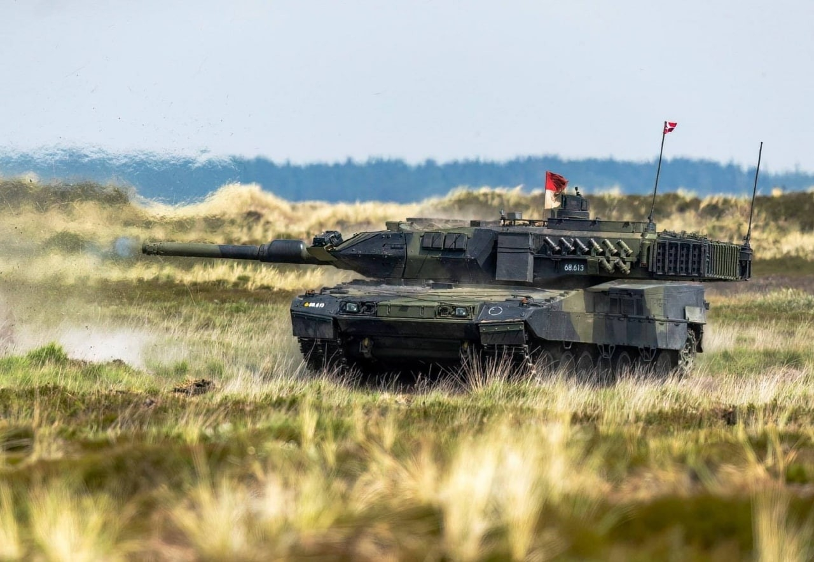
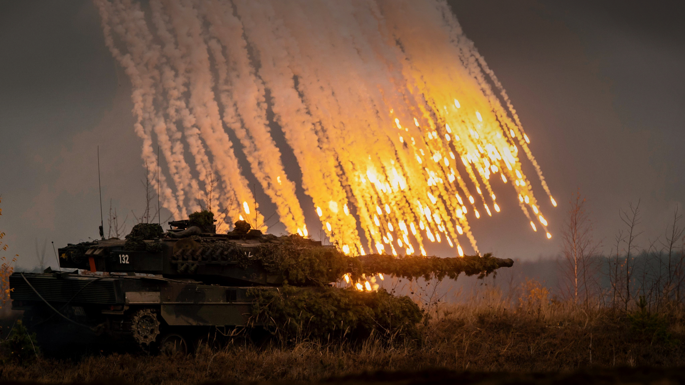
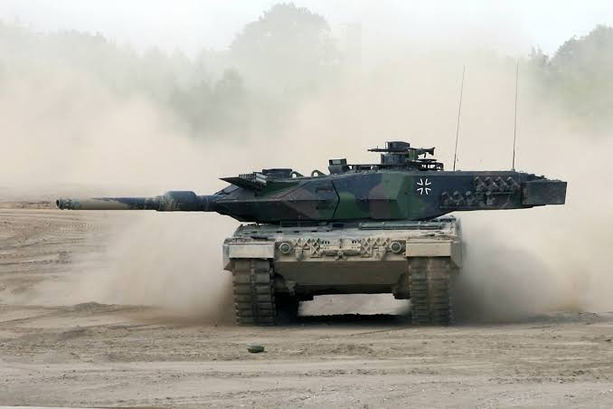
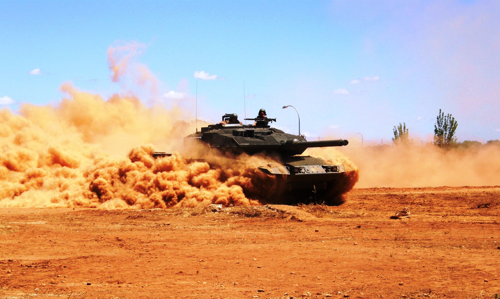
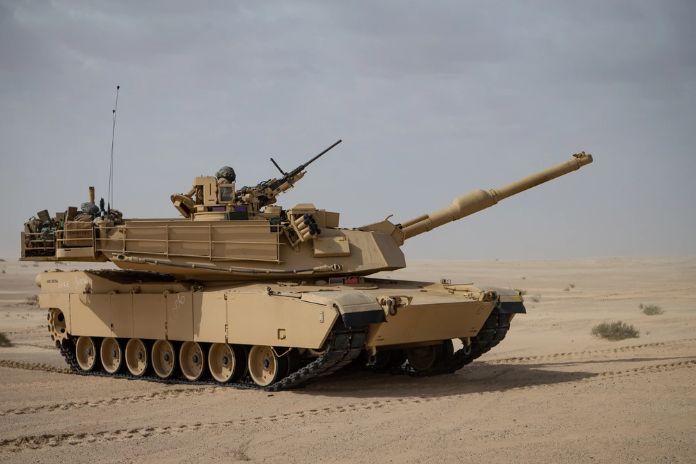
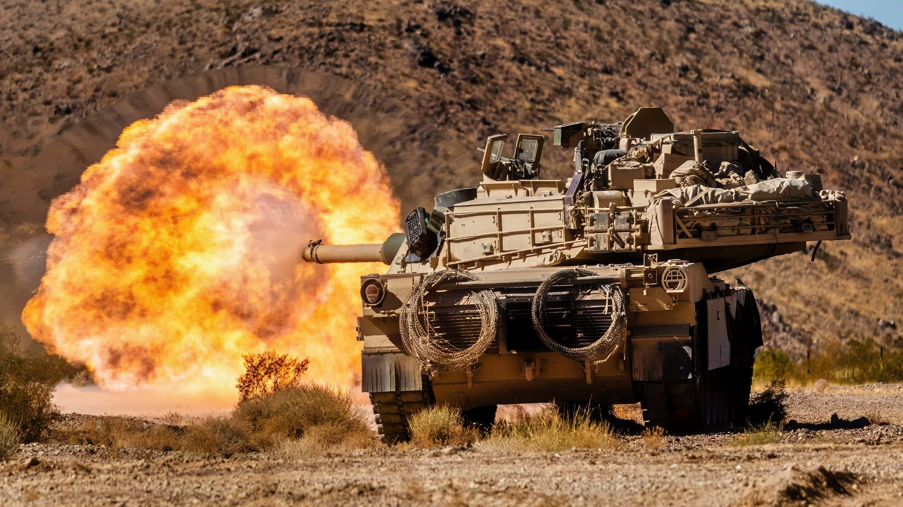
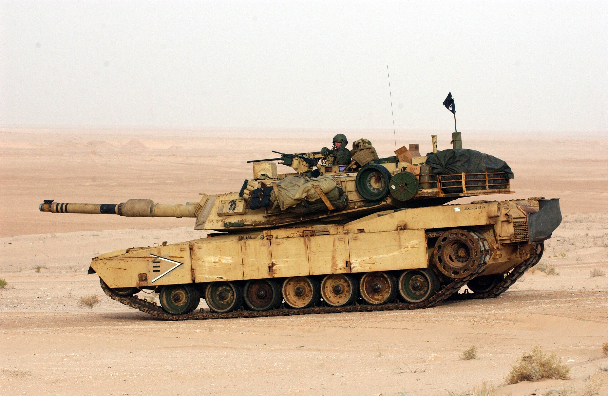

Tanque de Combate Principal | Alemania | 2014
Contexto de aparición y análisis técnico: Concebido como la evolución definitiva de la plataforma Leopard 2 desarrollada por Krauss-Maffei Wegmann. Surgió tras las lecciones operativas extraídas por el ejército alemán en conflictos asimétricos modernos. La versión 2A7 optimiza la protección balística pasiva e incorpora módulos de blindaje modular mejorados contra cargas huecas y proyectiles cinéticos (APFSDS). Destaca su arquitectura electrónica completamente digitalizada, un sistema de refrigeración auxiliar independizado (APU) y la capacidad de emplear munición programable HE de 120 mm desde su cañón Rheinmetall L/55.




Tanque de Combate Principal | Estados Unidos | 1980
Contexto de aparición y análisis técnico: Diseñado por Chrysler Defense e introducido en servicio activo en 1980 para reemplazar a los M60 Patton frente a las divisiones del Pacto de Varsovia. Su diseño supuso una revolución gracias al uso de blindaje compuesto tipo Chobham reforzado con capas de uranio empobrecido en versiones posteriores. Su sistema motriz se apoya en una potente turbina de gas Honeywell AGT1500 que ofrece una aceleración inusual para un vehículo de más de 60 toneladas, complementado con una suite óptica térmica digitalizada.


